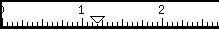
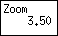
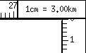
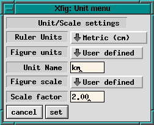

Panning, Zoom, Ruler and Units

The rulers are placed at the top and right
(left, if the drawing mode panel is right)
of the canvas, and the scale selected by
Units is displayed on them (i.e. inches or cm).
Normally, triangular markers which show the mouse cursor position
are also displayed on the rulers.
The rulers may also be used to scroll the canvas.
To scroll the canvas, press mouse button 2 (`Drag') on the ruler
and move cursor left/right or up/down;
the ruler will be moved following the cursor,
and the contents of canvas will be moved when mouse button is released.
If the SHIFT key was pressed during this operation,
the canvas will scroll five times further than the mouse movement.
Clicking on the ruler with mouse button 1 (`Pan Left' or `Pan Up')
or mouse button 3 (`Pan Right' or `Pan Down')
will scroll the canvas by 1/2 inch (1cm, if unit is cm).
The arrow keys have the same effect, too.
If the SHIFT key was pressed during those operations,
amount of scroll will be five times further.
The canvas may be panned
left,
right,
up, or
down
by pressing the
respective arrow keys while the mouse pointer is in the canvas.
If the SHIFT key was pressed during those operations,
amount of scroll will be five times further.
Panning may be done by clicking rulers
with mouse button 1 or 3, too.
The canvas view will be moved to the origin
if mouse button 1 (`Pan to Origin') is clicked
on the
UNIX box,
or mouse button 2 (`Pan to Origin') is clicked
on the canvas while the CONTROL key is down.
Selecting
Pan to origin from the
View menu will achieve the same action.
By default,
xfig will allow panning into negative coordinates.
This may be turned off by either starting xfig with the
-dont_allow_neg_coords
option, or unchecking the box in the
Global Settings panel.

The canvas may be zoomed/unzoomed by setting the zoom scale with the
Zoom Scale button
in the
Attribute panel.
Here are description of some shortcuts to zooming and unzooming quickly.
- To zoom the figure just fill the canvas,
choose Zoom to Fit canvas from
the View menu,
or use accelerator Ctrl-Z.
- Fit to canvas button on the
Zoom dialog
has the same function.
- Click Zoom Scale
in the Attribute panel
with mouse button 3 (`Inc/Next).
- Choose Zoom in from
the View menu,
or use accelerator Shift-Z.
- While holding the control key down
click mouse button 1 (`zoom area') on one corner of a rectangle,
drag the mouse to the opposite corner
and click mouse button 1 (`final point') again.
The area in the rectangle will be zoomed to fit the canvas.
- Choose Unzoom
from the View menu.
- Click mouse button 3 (`Unzoom') on the canvas
while pressing the CONTROL key.

The Units box is placed where the top and side rulers meet.
The units of the ruler (in or cm) and the scale
of the drawing (e.g. 1cm=3km) will be displayed here.
Clicking on the Units box with mouse button 3 (`Set Units/Scale')
will pop up a panel to set the units.
This panel is also available from the
Edit Menu

-
 Ruler units
Ruler units
- Select ruler
unit from Imperial (in) and Metric (cm).
-
Figure units
- Select unit
which is used to display dimensions when entering or editing object,
from Ruler units and User defined.
If User defined is selected here,
the string entered in Unit name will be displayed as the unit of dimension.
-
Unit name
- Set the name of the unit.
This is effective only if
User defined is selected in Figure units.
-
Figure scale
- Choose the scale
which is used to display dimensions when entering or editing objects,
from Unity and User defined.
If User defined is selected here,
the value specified by Scale factor will be multiplied by the dimensions
displayed when drawing objects.
-
Scale factor
- Set the value which will be multiplied by the dimensions
when displaying them.
This is effective only if
User defined is selected as Figure scale.
As an exmple, in the above panel
Ruler units are
Metric,
Figure units are
User defined,
Unit name is "km",
Figure scale is
User defined
and
Scale factor is 2.0, so when drawing, 1 cm will be reported as 2.0 km.
The default values for this panel can be set by
command line options
and resources.
[
Contents |
Introduction |
Credits ]